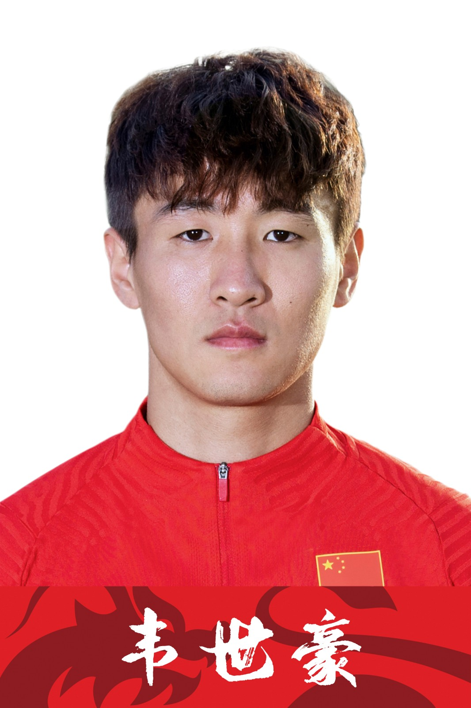
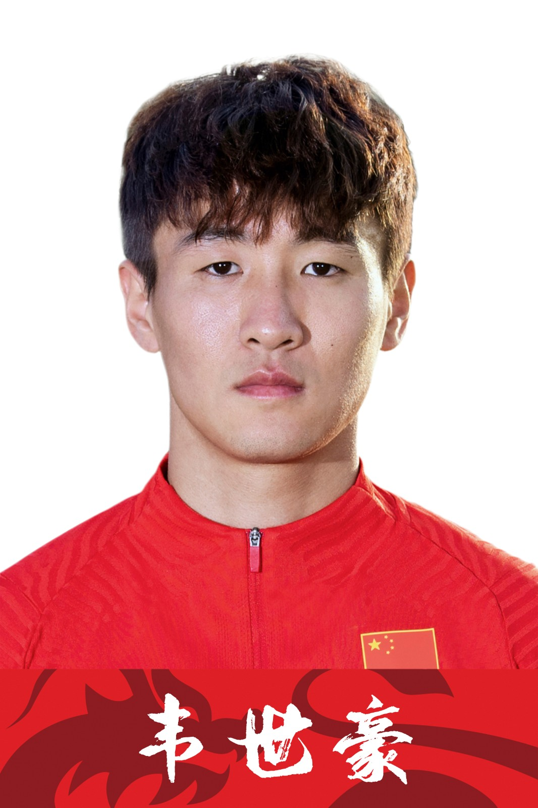
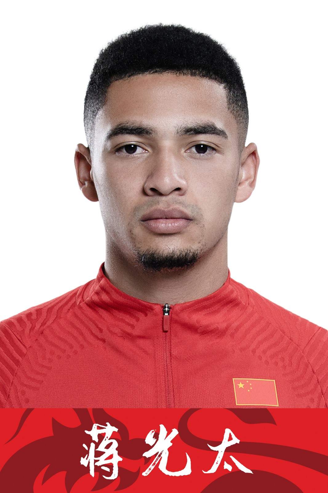
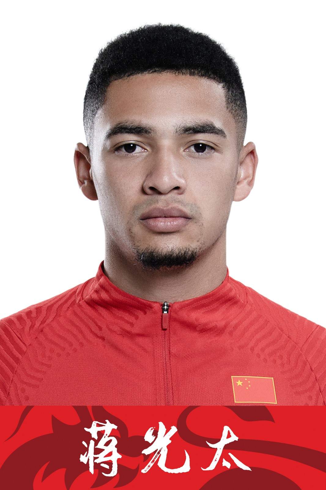

 

The Player's Information
Wu Lei
Wu Lei, born on November 19, 1991 in Nanjing, Jiangsu Province, is a Chinese football player and striker. He currently plays for Real Espanyol in Spain's First Division.
Wang ShenChao
Wang Shenchao, born on February 8, 1989 in Shanghai, is a Chinese football player. He is a full-back and plays for Shanghai SIPG football Club.
Wei Shihao
Wei Shihao, born on April 8, 1995 in Bengbu, Anhui Province, China, is a Chinese football player and striker who plays for Guangzhou FOOTBALL Club.
Wu Xi
Wu Xi, born on February 19, 1989 in Shijiazhuang, Hebei Province, is a Chinese football player. He is the captain and midfielder of the National Football Team and currently plays for Shanghai Shenhua Football Club.
Yan Junlin
Yan Junling was born in Changning District, Shanghai on January 28, 1991. Chinese professional football player, goalkeeper, currently plays for Shanghai SIPG football club.
Zhang Linpeng
Zhang Linpeng, born on May 9, 1989 in Jinan, Shandong Province, is a Chinese football player who plays at right-back, centre-back and centre-back. Now he plays for Chinese Super League Guangzhou Football Club.
Zhang Xizhe
Zhang Xizhe, born on January 23, 1991 in Wuhan, Hubei Province, is a Chinese football player. On December 16, 2014, he joined BUNDESliga FC Wolfsburg. On July 15, 2015, Zhang Xizhe transferred back to Beijing Guoan.
Elkeson
Elkeson de Oliveira Cardoso, born on July 13, 1989 in Coelho Neto, Brazil, is a Brazilian-Chinese football player and professional striker. Now he plays for Guangzhou Football Club in the Chinese Football Association Super League.
Alan
Alan Douglas Borges de Carvalho, born on 10 July 1989 in Barbosa, Sao Paulo, Brazil, is a Brazilian Chinese professional footballer who plays as a centre forward and a winger for Chinese Super League guangzhou Football Club.
Jiang Guangtai
Jiang Guangtai, born Tyias Browning on 27 May 1994 in Liverpool, England, is an English born Chinese football player who plays for Guangzhou Football Club in the Chinese Football Association (CFA) Super League.
Luo Guofu
Luo Guofu, was born on June 19, 1988, 173cm tall, weight 80kg, Brazilian Chinese football player (naturalized player), field boss professional striker (left wing, right wing), now plays for Guangzhou Football Club.